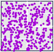

Driven IFS and Data Analysis
Stocks vs the Dow - Consumer Goods
Tyson
Coca-Cola
Colgate

Heinz
Anheuser-Busch
Consumer goods are old economy, more reliant on consumer purchases, that tend to be stable over time. We see little day-to-day correlation with the Dow. This is surprising for Coca-Cola, a component of the Dow.
Return to
Stocks vs the Dow
.